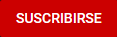
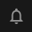
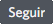
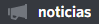
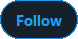

Minecraft de un modo nunca visto.
Editar el codigo de Minecraft ahora es la principal mecánica.


Entra en mi canal y haz click en  .
.
No te pierdas ninguna emisión pulsando en  .
.
Tienes diferentes formas de ayudar a seguir creando contenido
y a mejorar la calidad.
Twitch tiene un sistema que te permite apoyarme mensualmente con diferentes niveles de suscripción.
El funcionamiento de las suscripciones se parece al de Patreon.
Rango en Discord [Gran Leyenda].
Acceso a los mods en beta.
Invitación a los tours mensuales.
+ Nivel 1.
Rango en Discord [Leyenda Explosiva].
Descarga del mapa de survival.
Añado tu mecánica al JohanTweaks.
+ Nivel 2.
Los diferentes niveles de suscripción te dan ventajas y roles específicos en el discord de la comunidad.
Adquiriendo una suscripción a mi canal me apoyas mensualmente a poder seguir creando contenido de mejor calidad. Twitch te permite regalar suscripciones de cualquier nivel a quien quieras.
Twitch te permite vincular tu cuenta de Amazon Prime para conseguir una suscripción gratuita al mes.
El nivel de las suscripciones con Prime Gaming es equivalente a la suscripción de nivel 1.
Entra aquí para comprar una suscripción para ti o para regalar.
También puedes suscribirte con el botón o si ya eres suscriptor con para regalar suscripciones.
Twitch te permite apoyarme donando Bits.
Los Bits son una moneda virtual creada por Twitch para facilitar las donaciones dentro de la plataforma.
Los Bits son la forma más sencilla de apoyar un canal monetariamente.
Entra aquí para comprar Bits.
Entra en mi canal, y cuando esté emitiendo haz click en para seleccionar el emote y la cantidad.
Puedes modificar la cantidad en el chat una vez seleccionado el emote y una cantidad inicial.
Si eres creador de contenido en Twitch,
al acabar puedes mandarme a tus espectadores escribiendo
/raidjohanvonelectrum
Recuerda que tienes que escribir este comando antes de finalizar tu emisión.
Las raids son una bonita forma de crecer, permitiendo unificar nuestras comunidades.
Al hacerme raid puedes compartir mi contenido con tus espectadores y hacer que los mios te conozcan.
Si quieres apoyarme haciendo que más gente conozca mi contenido Twitch,
puedes escribir en el chat de tu canal
/hostjohanvonelectrum
Para entrar en tu canal visita twitch.tv/tu_nombre_de_usuario
Al hacerme host facilitas que mi contenido sea más recomendado a gente nueva.
Todo listo para ver la próxima emisión.
Entra en mi canal y haz click en .
No te pierdas ningun video pulsando en .
Todo listo para ver el próximo video.
Forma parte del Imperio Electrum.
Haz click en  en el canal .
Estás listo para estar enterado de todo lo que se dice.
Entra en mi perfil y haz click en .
No te pierdas ningún evento haciendo click en .
Ahora eres todo un enterado de lo que hago.